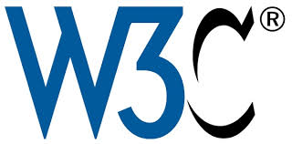

- Internet Corporation for Assigned Names and Numbers
ICANN's mission is to help ensure a stable, secure, and unified global Internet. To reach another person on the Internet, you need to type an address – a name or a number – into your computer or other device. That address must be unique, so computers know where to find each other. ICANN helps coordinate and support these unique identifiers across the world.

- World Wide Web Consortium (W3C)
The W3C (World Wide Web Consortium) is the main international standards organization for the web, developing open protocols and guidelines (like HTML, CSS) to ensure the web remains accessible, interoperable, and grows for everyone, bringing together members, staff, and the public to create a unified, future-proof web experience across all devices and users.

- Internet Society (ISOC)
ISOC most commonly refers to the Internet Society, a global non-profit organization founded in 1992 to promote open development, evolution, and use of the internet. It also refers to the Industrial Security Oversight Certification (a DoD security credential), an Information Security Operations Center, or the Islamic Society of Orange County.